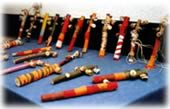
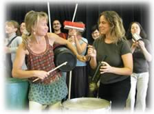
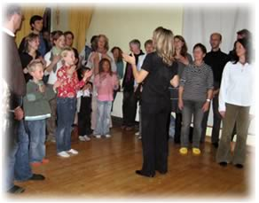

Rhythmuspädagogik
Fortbildungs- und Erlebnistage
Rhythmus ist Leben, Rhythmus verbindet, Rhythmus ist eine Sprache, die jeder versteht.
Das Erlernen einfacher Rhythmen über Sprache und rhythmische Bewegung liegt Kindern sehr nahe. Es macht Spaß, Rhythmen zu patschen, zu stampfen, zu klatschen und dabei Geschichten zu reimen. So lassen sich spielerisch musikalische Fähigkeiten, Koordination und Konzentration fördern.
Innerhalb meiner langjährigen Praxis als Rhythmuspädagogin in verschiedenen Arbeitsfeldern - Brennpunktarbeit, im Krankenhaus, in Schulen, in integrativen Projekten mit behinderten und nichtbehinderten Menschen, Kultur- und Freizeitprojekten sowie im Training mit Schauspielern, Lehrern und pädagogischen Fachkräften hat sich lebendiges Lernen mit Rhythmus immer weiter entwickelt.
Rhythmuswelten schöpft dabei zum einen aus dem Fundus verschiedener Rhythmuskulturen (Afrika, Indien, Europa, Kuba, Brasilien), sowie modernen Richtungen (Stomp, Body Music, Drumcircle u.a.) und ist außerdem stark beeinflußt von der TaKeTiNa® Rhythmuspädagogik.
Rhythmuswelten Fortbildungs- und Erlebnistage richten sich an Erzieher, Lehrer, pädagogische oder therapeutische Fachkräfte, an Multiplikatoren oder einfach an Menschen, die mehr über Rhythmus erfahren und begreifen wollen. In der Regel sind Vorkenntnisse nützlich, aber nicht erforderlich. Schulprojekte können nach Absprache tage- oder stundenweise, mit Abschlußaufführung oder Mitmach-Events gebucht werden.
Gerne berate ich Sie dazu.
Rhythmuswelten Erlebnistage und Fortbildungen
- Komm mit nach Afrika (Trommeln, Bewegung, Gesang und inszenierte Geschichten)
- Stomp- fetzige Rhythmen in Szene gesetzt mit Besen, Eimern, Fässern und Recycling-Instrumenten
- TaKeTiNa neuartige Formen des Lernens und "Chaosmanagement"
- Das Trommelorchester, Drumcircle
- Vom Körper zum Instrument – Bodypercussion und Trommeln
- Buum Tscha Ka Buum Tschak - rhythmische Sprachförderung
Komm mit nach Afrika
Ein beliebtes und vielseitig erprobtes Fortbildungskonzept für Kindergärten, Schulen und Musikschulen mit Trommeln, Bewegung, Gesang und inszenierten Geschichten. Diese Fortbildung bietet Ihnen ein Rhythmus-Setting, mit dem Sie auf verschiedenen Niveau-Stufen über längere Zeit arbeiten können.
Sie lernen:
- einfache Rhythmen für den Schulalltag
- Sprache und Verkörperung von Rhythmen
- afrikanische Klatsch- und Bewegungsspiele
- Geschichten mit Klang, Bewegung und Trommeln inszenieren
- afrikanische Rhythmen trommeln: vom Elementarstniveau zu weiterführenden Arrangements
- Wie arrangiere ich mein Angebot in Bezug auf die jeweilige Altersstufe?
Stomp- fetzige Rhythmen in Szene gesetzt
.. mit Besen, Eimern, Fässern und Recycling-Instrumenten Seit Anfang der 90er Jahre hat das "Rhythmical" Stomp die Bühnen der Welt erobert. Grund dafür sind mitreißende Rhythmusarrangements mit coolen Bühnenkulissen wie z.B. Ölfässer, Straßenschilder, Besen, Schrottteile usw. Mit einem Stomp Projekt haben Sie die Möglichkeit, kreativ über einen längeren Zeitraum mit Ihrer Klasse an einem Projekt zu arbeiten. Außerdem können Sie mit Recycling-Instrumenten Materialkosten sparen.
Inhalte der Fortbildung:
- Wie kommen wir in einen gemeinsamen Rhythmus?
- Was bedeutet Synchronisation?
- Rhythmus in Bewegung, Rhythmus in Szene gesetzt
- Erarbeiten wirkungsvoller Sounds und Arrangements mit Fässern, Besen, Bällen, Bechern, Stöcken, Tüten u.a.
- Wie bringe ich das Ganze auf die Bühne?
TaKeTiNa
Ein körperorientierter, musikalischer Gruppenprozeß, der den Menschen mit den Urkräften von Musik und Rhythmus verbinden mag. Der TaKeTiNa Rhythmuskreis ist ein Lernfeld, in dem es höchst lebendig zugeht. Ganz wie im Leben, gibt es eine ständige Fluktuation zwischen harmonischen und chaotischen Phasen. Die Fähigkeit zur Flexibilität in Chaosphasen beschleunigt die Weiterentwicklung im Lernprozeß. Leistungsdruck und Erwartung hingegen gehen oft einher mit verhärtender Rigidität, die sich entwicklungshemmend auswirkt.
Mögliche Themen, die das rhythmische Lernen begleiten oder spiegeln:
- Wie kann ich mich vom Rhythmus tragen lassen?
- Wie kann ich bei meinem Rhythmus bleiben und gleichzeitig offen sein für einen anderen Rhythmus, bzw. ein anderes Gegenüber?
- Wie kann ich Gelassenheit in komplexen und chaotischen Situationen entwickeln?
- Wie erlebe ich mich in Balance zwischen "Machen" und "Seinlassen"?
Nicht so sehr der Inhalt, sondern vielmehr die Prinzipien der TaKeTiNa Arbeitsweise sind hier für Lehrer interessant. Sie geben Impulse für neuartige Formen des Lernens und fördern "Chaosmanagement".
Das Trommelorchester/ Drumcicle
Verständigung ohne Worte: Über das Trommeln können unmittelbar Gefühle ausgedrückt werden - vom lustvollen Dampf ablassen bis zu zarten Tönen ist alles möglich - auch schüchterne Kinder werden so spielerisch aus der Reserve gelockt. Wir hören anderen zu und werden gehört.
Das Trommelorchester ist ein musikalisches Gemeinschaftserlebnis für Jung und Alt und eignet sich auch hervorragend für Großgruppen. Eine vielseitige Instrumentierung aus verschiedenen Trommeln, Glocken, Claves, Gongtrommeln, Boomwhackers u a. bietet ein abwechselungsreiches Klang- und Rhythmusspektrum. Settings und Techniken: Kanontrommeln, Erarbeiten einfacher Grundmuster beim Instrumentalspiel, Gruppendialoge, call-response, Soli, Tutti, Crescendo und Descrescendo, breaks u.a.

Vom Körper zum Instrument – Bodypercussion und Trommeln
Der Körper ist das naheliegendste und wohl älteste Musikinstrument mit vielseitigen Möglichkeiten. Die Verkörperung von Rhythmus und Percussion mit Stimme, Klatschen, Patschen, Schnipsen, Stampfen u.a. macht nicht nur unglaublich viel Spaß, sondern ist auch die beste Voraussetzung, um ein Instrument zu lernen. Inhalte dieser Fortbildung:
- Bodypercussion mit Hilfe rhythmischer Wortspiele
- Bodypercussion mit Hilfe eines Baukastensystems: vom Elementarstniveau bis zu polyrhythmischen Arrangements (body music)
- perkussive Silbensprache auf dem Körper getrommelt - die Brücke zum Instrument
- Instrumentalspiel auf der Basis des erarbeiteten Rhythmusmaterials
Buum Tscha Ka Buum Tschak - rhythmische Sprachförderung
Die Verbindung von Sprache und rhythmischer Bewegung ist offensichtlich: Kinder mit Sprachproblemen sind meist auch in ihrer senso-motorischen Entwicklung gehemmt. Die Förderung stimmlicher Artikulation in Verbindung mit Rhythmus, Trommeln und Bewegung steht im Vordergrund dieses Seminars.
- patschen, stampfen, klatschen, wie finden wir in einen gemeinsamen Rhythmus?
- ein rhythmischer Obstsalat, ein rhythmischer Zoo, Automarken im Rhythmuskanon ...
- Rhythmusspiele mit Hand und Fuß
- trommelnderweise Verse, Reime, und Geschichten erfinden
- Rhythmen sprechen und trommeln
- afrikanische Klatsch- und Bewegungslieder mit Trommelbegleitung
- italienisches Bewegungslied
Rhythmuswelten Veranstaltungen können auch als kollegiumsinterne Fortbildungen für Lehrer bundesweit gebucht werden.